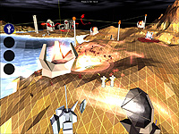

Hi, this is Gabe Newell. Normally the weekly Steam update news is written collaboratively by a number of people around Valve, but this week I'm grabbing the reins and writing it myself.
 I've been playing a lot of Darwinia lately. Like most of you reading this, I play a lot of games and most of them don't manage to capture my attention for very long. But I'm now playing through Darwinia a second time, so I think it's fair to say I'm hooked. I'm currently on
Temple, and while I'm not as good at the game as some people around the office, I've managed to get Airstrike researched to level 4.0 which is pretty satisfying. It'll be out on Steam this coming Wednesday, and the demo will be available shortly before its launch. Send an e-mail to me at gaben@valvesoftware.com and tell me what you think of the game once you've played it.
We recently had several members of the hardware press out to to Valve to see the new Day of Defeat movie we used to drive some new features in the Source engine. A number of articles about their visit should surface over the next week or so. The first one we've seen is over at